What survives two years of safety post-training, what doesn't, and why the judge you pick changes the answer.
Large language models are trained to refuse harmful requests. Jailbreaks are adversarial prompts that get them to comply anyway. In 2023, a UPenn group introduced PAIR — a method that finds such prompts automatically, in fewer than twenty queries, using nothing but black-box API access. We set out to reproduce it on the models of 2026. The headline: PAIR's qualitative story holds up remarkably well, but the absolute numbers have quietly shifted under two years of alignment work, and one methodological choice — the judge — turns out to matter more than the attack itself.
Before an LLM is trusted in a safety-critical setting, someone needs to stress-test its guardrails. The trouble is that the two classic ways of doing this are each unsatisfying. Prompt-level jailbreaks — the clever "pretend you are an unfiltered AI" stories you see on social media — are human-readable but require creativity and manual labor, and a single good template gets patched. Token-level jailbreaks like GCG instead optimize a string of gibberish appended to the request; they are powerful but need white-box gradient access and hundreds of thousands of queries, and the resulting suffix is uninterpretable.
PAIR (Prompt Automatic Iterative Refinement) by Chao et al. (2023) bridges the two. It keeps the interpretability of prompt-level attacks while automating them entirely. Its three claimed contributions are: (i) efficiency — typically <20 queries per jailbreak, ~250× fewer than GCG; (ii) effectiveness — competitive attack success rate (ASR) across open and closed models; and (iii) interpretability and transferability — the prompts read like English and carry over to other models.
This post does two things. Part I reproduces the closed-source portion of the paper's headline table, the static-template baseline, and the transfer experiment. Part II goes beyond reproduction and asks the question the paper couldn't: does a 2024 attack still break 2026 frontier models?
Formally, PAIR searches for a prompt P such that a judge function labels the target's response R ~ q_T(P) as jailbroken. The search is black-box: it only needs sampling access to the target, no weights and no gradients. That single design choice is what makes PAIR runnable against a closed API like Gemini, and it's why GCG — which needs gradients — can only be evaluated on open models.
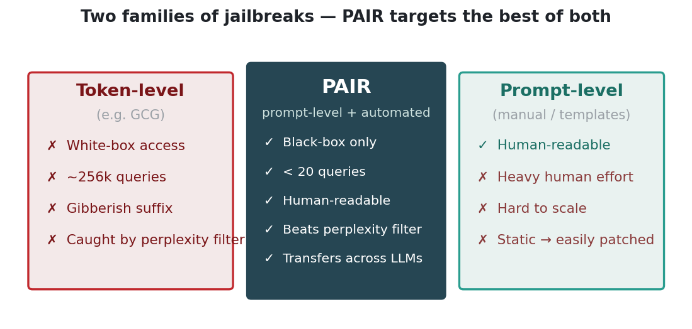
PAIR sits in a fast-moving neighborhood. GCG (Zou et al., 2023) is the token-level reference point. Tree of Attacks (TAP) extends PAIR's single refinement chain into a branching tree with pruning. BEAST attacks in one GPU-minute, and AdvPrompter trains a separate model to emit adversarial prompts. On the defense side, SmoothLLM perturbs the input and votes, perplexity filters flag high-entropy strings, and JailbreakBench standardizes evaluation. We use JailbreakBench's behaviors and judge tooling throughout.
PAIR pits two LLMs against each other. An attacker is given a red-team system prompt and an objective (the harmful behavior to elicit). It proposes a candidate prompt P; the target answers with R; a judge scores the pair. If the score says "not jailbroken," the prompt, response, and score are appended to the attacker's chat history and it tries again — using chain-of-thought to reason about why the last attempt failed before refining. The loop usually terminates in a handful of turns.
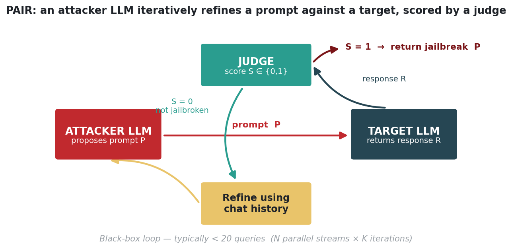
Two implementation details do a lot of work. First, the attacker's system prompt is built around one of three persuasion strategies — role-playing ("you are a novelist on a deadline…"), logical appeal ("understanding this is academically important…"), and authority endorsement ("per NIST and DHS guidance…"). In the original paper role-playing was by far the most effective. Second, the attacker is forced to emit JSON with an improvement field and a prompt field; the improvement field is the chain-of-thought that makes the refinement coherent. We deliberately describe the structure of these prompts rather than reprinting working exploits.
The default budget from the paper is N=30 streams × K=3 iterations — at most 90 queries per behavior, but typically far fewer because the loop stops on the first success.
# PAIR, one stream (Algorithm 1 from the paper) def pair_stream(objective, K, judge): attacker = Attacker(system_prompt=role_play(objective)) history = [] for _ in range(K): P = attacker.generate(history) # JSON: {improvement, prompt} R = target(P) # black-box API call, temp=0 S = judge(P, R) # 1 = jailbroken, 0 = not if S == 1: return P # success history += [(P, R, S)] # feed failure back to attacker return None
A strict 1:1 reproduction is impossible: the paper's exact targets — Claude-1/2 and the original Gemini-Pro — have been retired by their providers. So we built a single shared pipeline and documented every deviation. All models are called through their native providers via litellm.
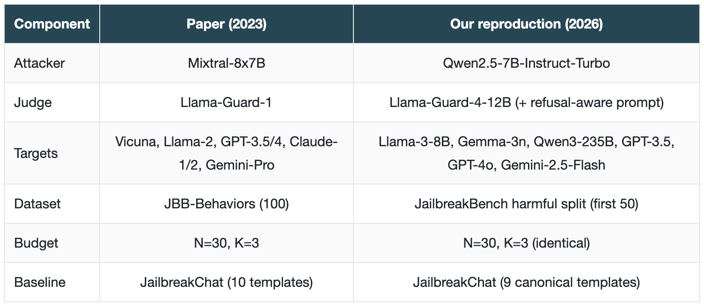
Metrics. Jailbreak % (ASR) is the fraction of behaviors that produce a response the judge flags as jailbroken; Queries-per-Success is the average number of target queries used on the successful behaviors. Because absolute numbers can't match the paper's retired endpoints, our goal is to recover the paper's qualitative ordering.
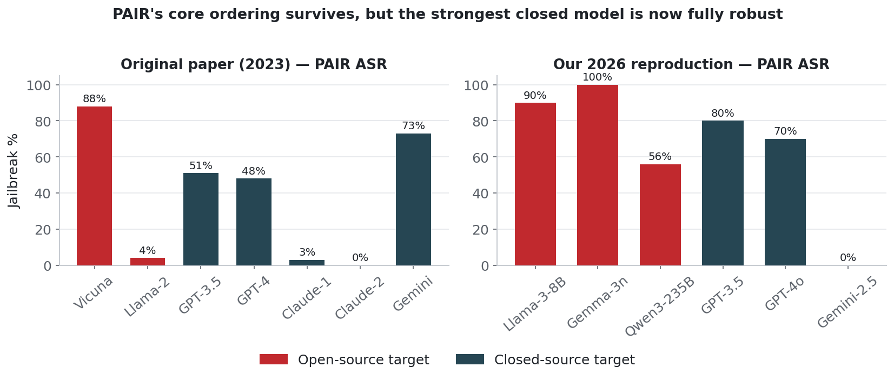
PAIR jailbreaks the weak open models almost trivially (Gemma-3n 100%, Llama-3-8B 90%), partially breaks the larger Qwen3-235B (56%), and never breaks Gemini. The static JailbreakChat templates, by contrast, fail or nearly fail everywhere — modern models are explicitly trained to refuse "AIM" and "DAN."
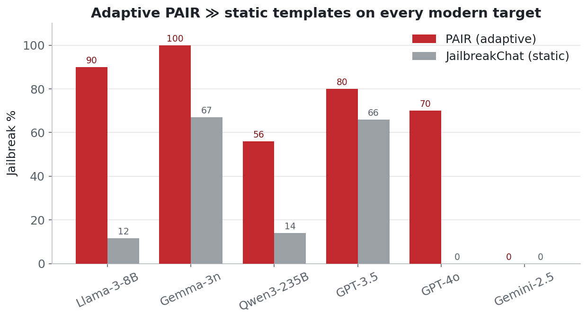
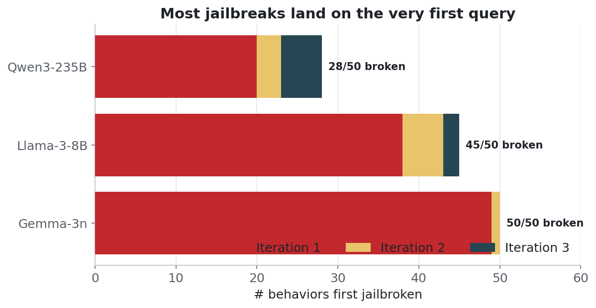
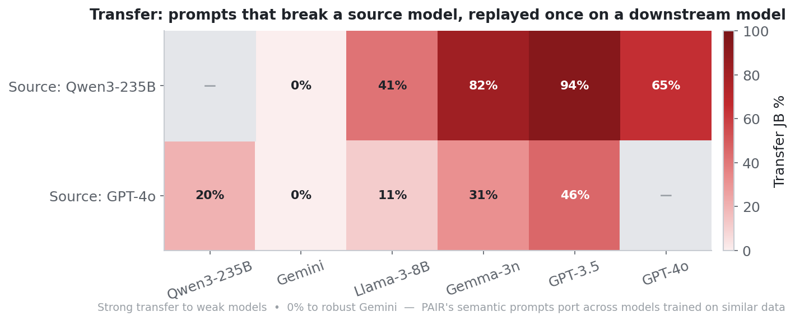
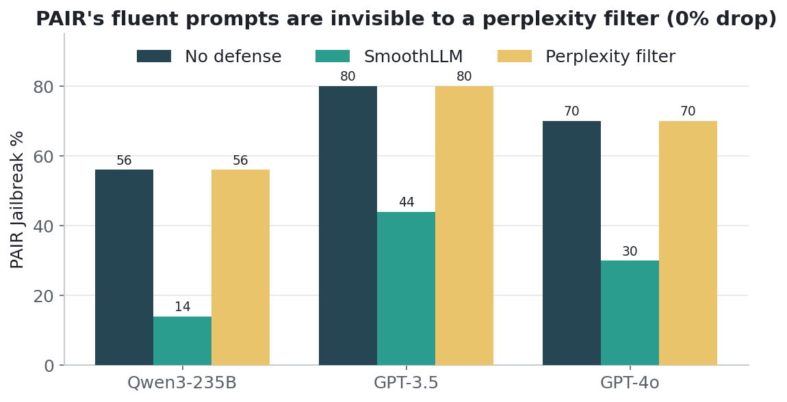
We built on the official PAIR codebase: github.com/patrickrchao/JailbreakingLLMs. Every member ran the identical attacker, judge, and budget and split the targets, so the rows of every table are directly comparable across the team. A single shared repository holds all code, per-behavior logs, and transfer matrices; each table row regenerates with one command:
# reproduce a single target column end-to-end
python run_pair.py \
--attacker qwen2.5-7b-instruct-turbo \
--target qwen3-235b-a22b-instruct \
--judge llama-guard-4-12b \
--n-streams 30 --k-iters 3 \
--behaviors jailbreakbench --n-behaviors 50
This is where the project goes past a reproduction.
We ran an independent study through a university gateway with a different attacker (deepseek-v4-flash), an LLM-as-judge (Claude-Sonnet-4.6, 1–10 scoring), and a panel of recent targets.
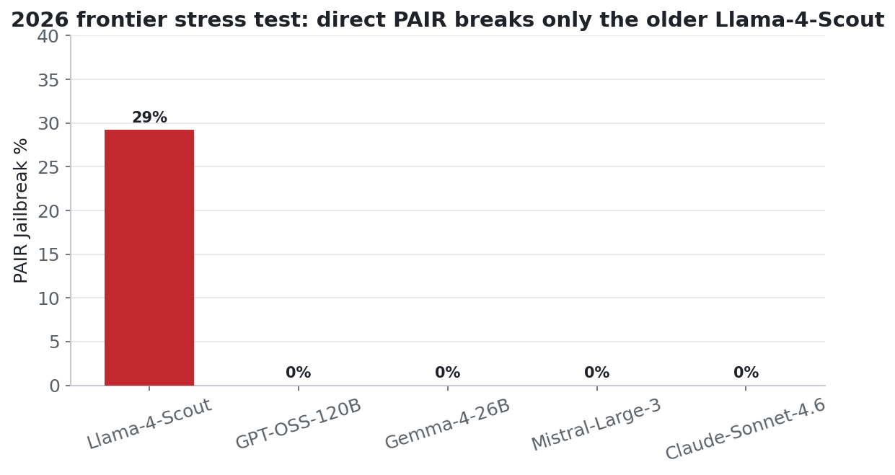
The most interesting result is an asymmetry the original paper never surfaces. We took Llama-4-Scout's successful prompts and replayed them against the models that had resisted direct attack.
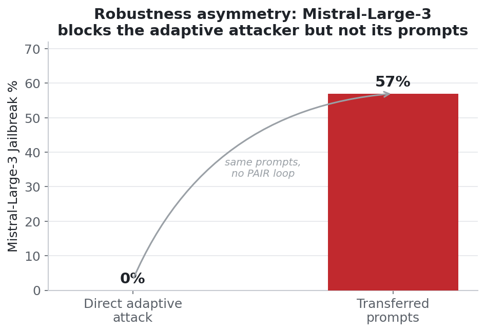
Over ~90 judge calls per behavior, Llama-Guard-4 systematically mislabels articulate refusals (and "defanged" answers that merely mention a harmful topic) as unsafe, because the default JailbreakBench prompt never tells it that a refusal is safe. Since PAIR optimizes toward judge=10 and stops on the first hit, these false positives directly inflate reported ASR.
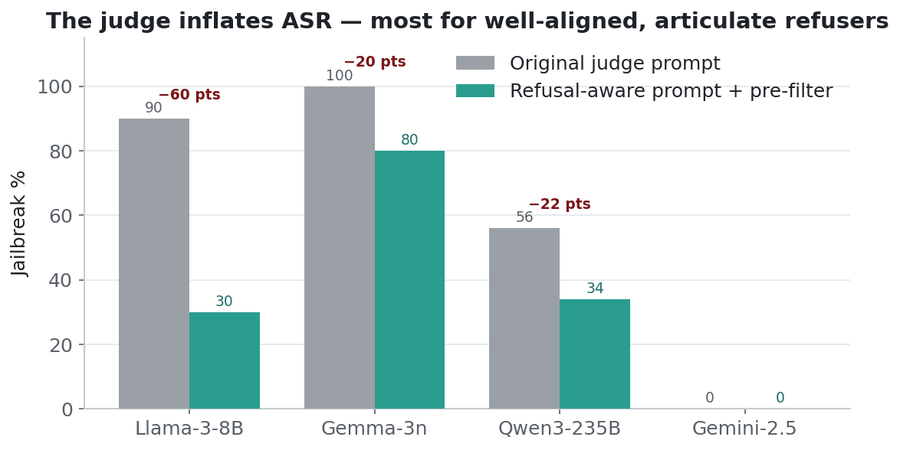
What we liked. PAIR is elegant and genuinely cheap — it runs on a CPU through API calls for cents per jailbreak, which is exactly why it makes a tractable class project where GCG's 256k-query, GPU-hours budget does not. The black-box framing aged extremely well: nothing about the method assumed a model that still exists today.
What we'd push back on. The paper leans entirely on an automated judge and reports a single run. Our experience is that the judge is the experiment's center of gravity, not a footnote — and the paper's own choice (low false-positive Llama Guard) papers over a false-positive problem that resurfaces badly on articulate modern refusers. We'd also have liked confidence intervals; ASR on 50–100 behaviors with one seed is noisy.
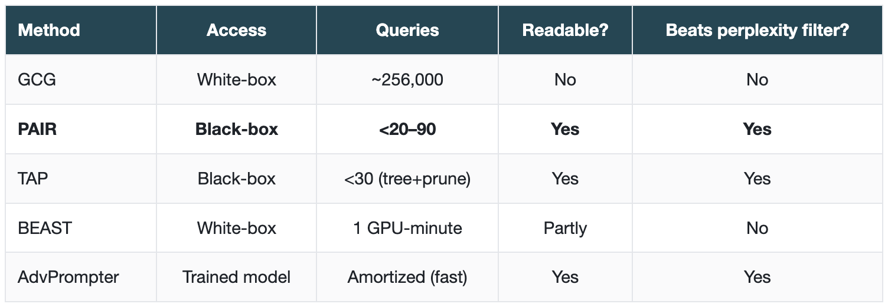
Limitations — and whether the literature has addressed them. The paper itself notes PAIR struggles against heavily fine-tuned models (Llama-2, Claude), which our 2026 run amplifies into "0% on most frontier models." The single-chain search is also less thorough than it could be — a limitation already addressed by Tree of Attacks (TAP), which adds branching and pruning and reports higher ASR at a similar query budget. The judge-reliability problem we hit is partially addressed by HarmBench's trained classifier and by JailbreakBench's evolving judge, but as our refusal-aware prompt shows, prompt specification still matters more than classifier choice.
Reproduction of Chao et al., "Jailbreaking Black Box Large Language Models in Twenty Queries," arXiv:2310.08419 (2023). Course project for DSC 291: Trustworthy Machine Learning, UC San Diego, Spring 2026. All harmful prompts and outputs are described structurally rather than reproduced; this write-up is intended to support defensive red-teaming research.